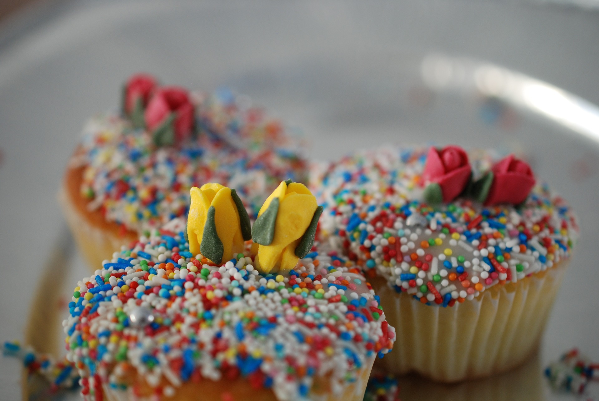
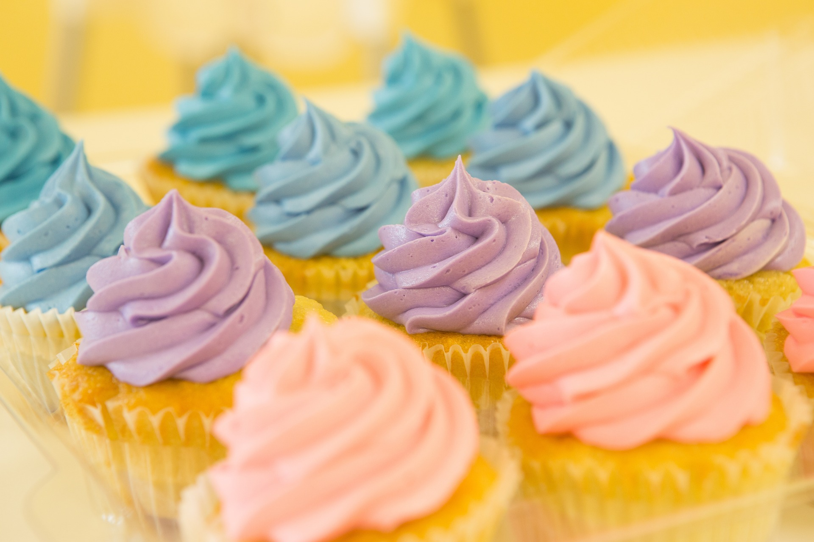
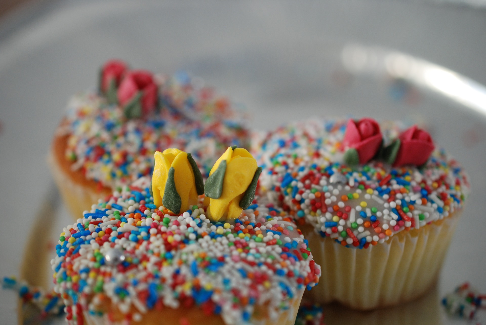
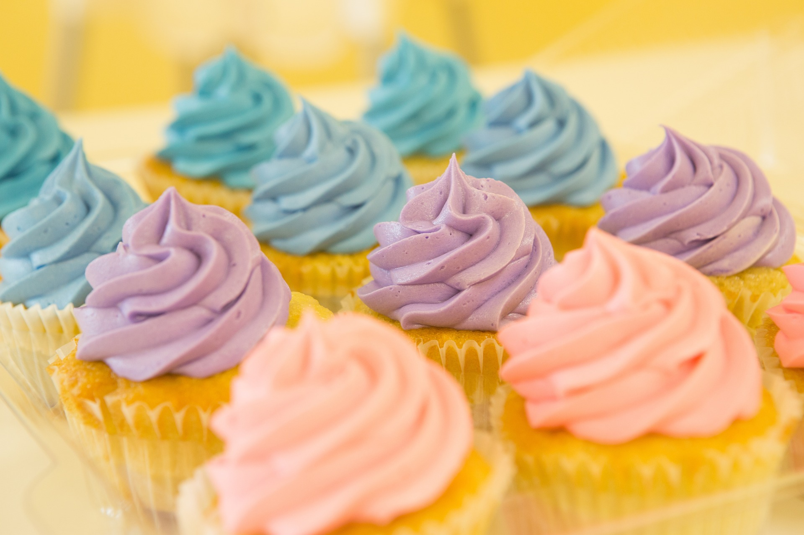

Our team specializes in crafting artisan breads, French-inspired pastries, and a comprehensive selection of savory gourmet take-out options, including soups, salads, and entrées. We also offer a variety of house-made specialty cakes, pies, and tarts. In addition to our retail offerings, CLNTY Bakery supplies all the breads, desserts, and ice creams enjoyed at our restaurants in Santa Cruz.
As we broaden our selection of prepared foods to complement our baked goods, The Bakery aspires to be the top choice for discerning customers in search of high-quality take-home meals. Our dedication to providing friendly, helpful, and passionate service goes hand in hand with our commitment to quality, ensuring that we strive to deliver the highest level of satisfaction to each customer.